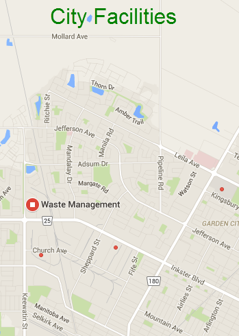

Recycling is good for the environment.
Our city has one of the best recycling programs in the world! You can pick up another recycling box at City Hall.
Bulk items can also be picked up on your regular garbage collection day.

Recycle Tips
Get into the habit of recycling, and it will become second nature. Here are some tips that will help you:
Bottles, cans and jars:
All bottles, cans and jars must be empty.
Take the lids off of all bottles, cans and jars and rinse them.
Throw all metals lids into the recycling box.
Throw plastic lids that bend easily into the recycling box.
Leaf and yard waste can be placed in paper bags. You can also use yard waste to make compost for your garden.
How to make compost
Green bins can be used for kitchen waste.
What goes in a recycling box?
Put the following items in a recycling box:
Glass
Paper
Plastic
Aluminum foil (clean)
Cardboard (fold or break into small pieces)
Community Recycling Centers
Community Recycling Centers will accept good used clothing, furniture and household items for their on-site stores.
Instead of calling for a bulk pickup, take used items to the Community Recycling Centers!
West Community Recycling Center
Monday: 10 am - 1 pm
Wednesday: 10 am - 5 pm
First Saturday of each month only: 9 am - 12 pm
East Community Recycling Center
Tuesday: 10 am - 2 pm
Saturday: 10 am - 12 pm
Large Item Pickup
Large items can be picked up by the city garbage collection service. Please contact us directly for a to arrange a pickup time.